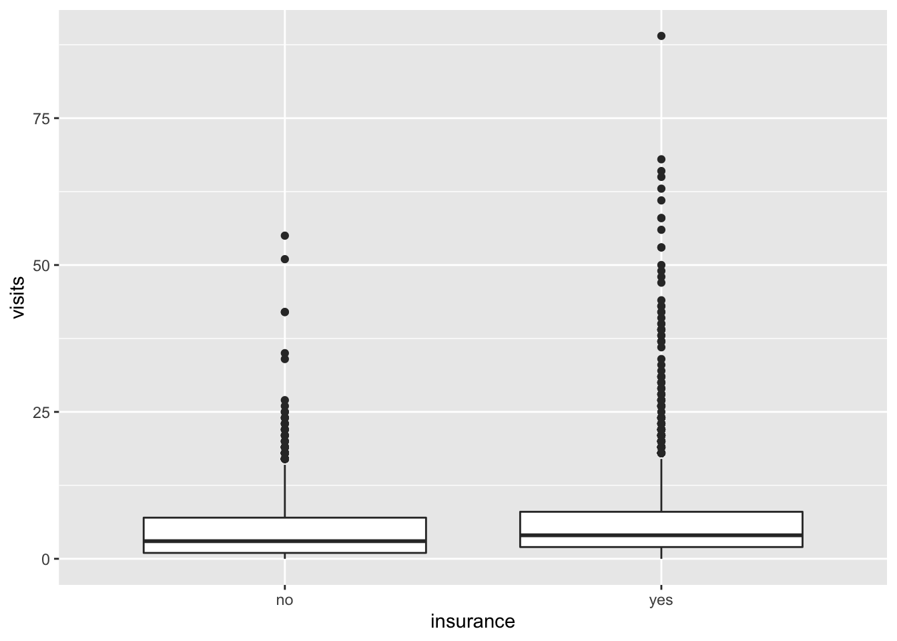

Chapter 10 Panel data
\(\{Y_{it},D_{it},X_{it}\}\)が観察できるデータを想定する
- \(i:\)回答者、\(t:\)回答時点
10.1 パッケージ
library(tidyverse)
library(estimatr)
library(AER)
library(did) # weighted two-way fixed effect10.2 Data
AERパッケージに含まれるパネルデータPSID7682を利用
- 595名の回答者について、1976年から1983年までの7期間パネルデータ
data("PSID7682")
data <-
PSID7682 |>
group_by(id) |>
mutate(period = as.numeric(year), # yearを連続変数化
treatment.time = if_else(married == "yes",
period,
999),
treatment.time = min(treatment.time)
) |> # 結婚したperiodを作成(結婚しなかったサンプル = 9999)
ungroup()10.3 識別: Pallarel trend in the two-by-two case
2時点・2グループデータ
トリートメントグループ: 2期目に介入を受ける
コントロールグループ: 両期間ともに介入を受けない
Pallalel trendの仮定 \(E[Y_{2i}(0)-Y_{1i}(0)|i\in Treatment]-E[Y_{2i}(0)-Y_{1i}(0)|i\in Control]\)
差の差の推定量を推定
\[E[Y_{i2}|i\in Treatment]-E[Y_{i1}|i \in Treatment]\]
\[-(E[Y_{i2}|i\in Control]-E[Y_{i1}|i \in Control])\]
\[= E[Y_{i2}(1) - Y_{i2}(0)|i \in Treatment]\]
10.4 推定: Two-way fixed effect model
- Two-way fixed effect model
\[E[Y_{it}|D_{it}=d,f_{i},f_{t}]=\beta_\tau\times d + f_i + f_t\]
Two-by-two dataのもとでは、差の差の推定と同値
Two-by-two dataの整備
df <-
data |>
filter(period <= 2) |> # 1,2期目データ
filter(treatment.time == 999 |
treatment.time == 2) |> # トリートメント/コントロールグループ
mutate(D = if_else(period >= treatment.time,
1,
0)
) # 介入後ダミー- Two-way fixed effectの推定
lm_robust(weeks ~
D +
factor(period),
data = df,
clusters = id,
fixed_effects = id)## Estimate Std. Error t value Pr(>|t|) CI Lower CI Upper
## D -1.066667 1.2271177 -0.8692456 0.4713004 -6.0381262 3.904793
## factor(period)2 1.400000 0.8532526 1.6407803 0.1043726 -0.2953947 3.095395
## DF
## D 2.135502
## factor(period)2 89.00000010.5 推定:Weighted two-way fixed effect model
2期間以上のデータにおいて、parallel trendの仮定に基づいて因果効果を推定する手法
ここでは Callaway and Sant’Anna (2020) を紹介
データ整備
df <-
data |>
filter(treatment.time != 1) |>
mutate(id = as.numeric(id),
treatment.time = if_else(treatment.time == 999,
0,
treatment.time)
)- 推計
fit <-
att_gt(yname = "weeks",
tname = "period",
idname = "id",
gname = "treatment.time",
data = df,
control_group = 999)
fit##
## Call:
## att_gt(yname = "weeks", tname = "period", idname = "id", gname = "treatment.time",
## data = df, control_group = 999)
##
## Reference: Callaway, Brantly and Pedro H.C. Sant'Anna. "Difference-in-Differences with Multiple Time Periods." Forthcoming at the Journal of Econometrics <https://arxiv.org/abs/1803.09015>, 2020.
##
## Group-Time Average Treatment Effects:
## Group Time ATT(g,t) Std. Error [95% Simult. Conf. Band]
## 2 2 -0.9412 1.1141 -3.8628 1.9804
## 2 3 -2.5455 2.1438 -8.1674 3.0765
## 2 4 -8.8526 6.8362 -26.7799 9.0746
## 2 5 -8.2151 8.9402 -31.6598 15.2297
## 2 6 -1.5055 1.1944 -4.6377 1.6267
## 2 7 -2.2556 1.8227 -7.0354 2.5243
## 3 2 -2.3434 0.9669 -4.8791 0.1922
## 3 3 1.7980 0.6582 0.0720 3.5240 *
## 3 4 0.7228 1.3448 -2.8038 4.2494
## 3 5 1.0538 0.8182 -1.0918 3.1994
## 3 6 0.2125 1.2467 -3.0570 3.4819
## 3 7 1.8111 1.7070 -2.6654 6.2876
## 4 2 2.5765 5.5783 -12.0520 17.2051
## 4 3 0.6579 2.0030 -4.5947 5.9104
## 4 4 -2.7684 1.3128 -6.2112 0.6743
## 4 5 -1.0860 1.8997 -6.0678 3.8958
## 4 6 -6.8489 7.6205 -26.8329 13.1351
## 4 7 0.5833 1.0310 -2.1203 3.2869
## 5 2 -1.3000 0.8599 -3.5550 0.9550
## 5 3 -0.8866 1.0178 -3.5556 1.7824
## 5 4 -0.2742 0.7332 -2.1969 1.6486
## 5 5 -0.3118 0.9465 -2.7939 2.1703
## 5 6 -3.4286 5.9839 -19.1209 12.2638
## 5 7 0.5222 0.6496 -1.1813 2.2257
## 6 2 -5.3800 2.5041 -11.9468 1.1868
## 6 3 -7.5206 4.9604 -20.5289 5.4876
## 6 4 4.8333 3.5856 -4.5696 14.2363
## 6 5 6.3242 3.5018 -2.8590 15.5074
## 6 6 -6.2527 2.3378 -12.3833 -0.1222 *
## 6 7 -2.3222 1.0107 -4.9728 0.3283
## 7 2 -1.2871 0.8470 -3.5084 0.9341
## 7 3 0.1327 0.6223 -1.4992 1.7645
## 7 4 -1.7872 0.5678 -3.2762 -0.2982 *
## 7 5 1.7065 0.4807 0.4461 2.9670 *
## 7 6 -2.2778 0.6434 -3.9650 -0.5906 *
## 7 7 0.9556 0.5652 -0.5267 2.4378
## ---
## Signif. codes: `*' confidence band does not cover 0
##
## P-value for pre-test of parallel trends assumption: 0
## Control Group: , Anticipation Periods: 0
## Estimation Method: Doubly Robust- 単純平均効果
fit |>
aggte(type = "simple") |>
summary()##
## Call:
## aggte(MP = fit, type = "simple")
##
## Reference: Callaway, Brantly and Pedro H.C. Sant'Anna. "Difference-in-Differences with Multiple Time Periods." Forthcoming at the Journal of Econometrics <https://arxiv.org/abs/1803.09015>, 2020.
##
##
## Overall ATT:
## ATT Std. Error [95% Conf. Int.]
## -1.9877 1.1869 -4.314 0.3386
##
##
## ---
## Signif. codes: `*' confidence band does not cover 0
##
## Control Group: , Anticipation Periods: 0
## Estimation Method: Doubly Robust- 動学効果
fit |>
aggte(type = "dynamic") |>
ggdid()
References
Callaway, Brantly, and Pedro HC Sant’Anna. 2020. “Difference-in-Differences with Multiple Time Periods.” Journal of Econometrics.